Note: This post is going to be a bit different than the others. I am simply going over concepts used in my project for those that are interested in artificial intelligence (specifically machine learning) and how it works. This is not necessary to understand the gist of what I’m trying to do, so if you’re afraid of math, technical writing, and/or long reads (because this post is a little long), run away now (or skip to the conclusion where I summarize the post). This post assumes a knowledge of basic mathematical notation and simple differential Calculus. All figures open-source and taken from Wikimedia, and the equations have been generated by myself in MS Word. If you wish to research more, Wikipedia is a great friend (I learned much of what I wrote from there). WordPress is really weird with the formatting so I made a PDF available to download here (it’s way better).
In classical computer science, a program ideally does exactly what it’s programmed to do – nothing more or nothing less. For a lot of things, this is great (e.g. computing statistical values). However, there are some problems in which an algorithmic approach is unfeasible or even impossible. The thing about algorithms is that they provide an exact answer, which can be very difficult at times. But what if we could just get a good-enough answer, one that isn’t perfect but works well-enough that we don’t need anything better. This is known as a heuristic technique. When you think about it, humans function in much the same way. Our common sense, moral judgment, and many other traits are heuristic. This is the fundamental principle of artificial neural networks (ANNs).
An ANN does not return a discrete, 100% confident answer. Imagine a problem where the network is to output a yes or no value, corresponding to 1 and 0 in binary respectively. The network will return a value of 0.97 for example. This isn’t a 1 or yes, but it’s close enough that we know what it’s trying to say. Logic in which the value can be between 0 and 1 is known as fuzzy logic and is heavily applied to artificial intelligence (AI).
This is incredibly useful in applications such as image recognition and natural language processing. Recognizing an image of say a tomato is complicated. Every tomato is different, so for a computer to recognize one forgoes an algorithmic approach. You need some sort of intuition to know what a tomato is, based on previous tomatoes you’ve seen. The tomato you’re looking at now isn’t exactly the same as tomatoes you’ve seen before, but it’s similar enough that you know it’s the same object. This is how an ANN would classify an image as tomato – by knowing it’s close enough to previous tomatoes it has seen.
In order to understand ANNs, it is important to look at their theoretical foundation. ANNs are inspired by biological neural networks. Let’s recap how a biological neuron works. Here’s a diagram:
The dendrites of the neuron pick up chemicals known as neurotransmitters (such as dopamine and serotonin) that have been secreted by other neurons in the vicinity. The neuron’s membrane contains sodium and potassium ion channels that allow the passage of said ions in and out of the cell. This allows for electrical polarization. The resting potential of a neuron is about -70mV. Neurotransmitters affect these functioning of these channels and thus can depolarize the neuron. Should enough neurotransmitters be processed, and the potential of the neuron reaches around -55mV (known as the threshold), the cell will fire, which means it will send a signal down the body and release neurotransmitters of its own at the axon terminal.
An artificial neuron, the building blocks of an ANN, functions in much the same way as a biological neuron. In essence, the biological neuron takes in inputs (neurotransmitters), checks if the summation of those inputs passes a threshold, and if so it will produce an output (fires). This process can naturally be modeled in a computer science sense.
The simplest type of artificial neuron is a perceptron. A perceptron is mathematically an implementation of the Heaviside step function, known as an activation function. For those not familiar, it’s a function where the value is zero for a negative input, and one for a positive input. Here’s a graph:

So here’s a mathematical model of what a perceptron does (and don’t worry I’ll explain what it means):
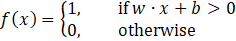
This function returns 1 if the condition shown is met and 0 otherwise. In this notation, w means weights, x means inputs, and b means bias. Weights are a property of the neuron (specifically its connection to other neurons). Think of them as controlling how much each input matters when calculating the weighted sum of inputs. w • x is a dot product (the weighted sum) which means:
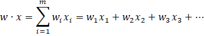
All this means is you are multiplying the corresponding weights and inputs, and then adding them all together. The bias simply allows us to shift the threshold to the value we want. It can then be seen how this model allows the implementation of fuzzy logic. It simply states if the dot product of the weights and inputs crosses the threshold, the neuron will fire. It does not need to be an exact value, just greater than the threshold we have set. A perceptron is a very simple model, and there are many more types of artificial neurons, such as the sigmoid neuron, but they are useful in illustrating the basics of how these neurons function.
More complicated artificial neurons use more complicated activation functions. Surprisingly, the sigmoid neuron uses the sigmoid function as its activation function. The sigmoid function is a special case of the logistic function and is shown below with its graph:
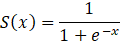
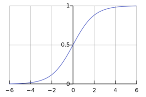
In order to calculate an output, a sigmoidal neuron would pass the weighted sum through the sigmoid function. Rather than return a 0 or 1 like the perceptron, the geometry of the function implies it would return a decimal value between 0 and 1. As a result the output of the neuron would be:
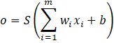
Activation functions such as these allow for solving much more complex problems as they are a more rigorous implementation of fuzzy logic. While the perceptron is incredibly limited in application, the sigmoid neuron is one of the most common neurons used in ANNs.
An ANN is simply a network of artificial neurons operating in tandem. This means the neurons have connections with each other. A simple neural network can be visualized as such:

There are three layers to this network. The input layer (3 inputs here), which is simply what we plug into the network, the hidden layer, which contains our neurons, and the output which is what the network outputs (2 outputs here). As you can see, the arrows indicate connections between the neurons and inputs/outputs. Each of these connections has a weight associated with it (some value) that corresponds to the weight we discussed in the previous section. By passing the inputs through this hidden layer, the network can achieve an output that could not be arrived at algorithmically as this emulates thinking. A mathematical representation of a neural network is provided below:
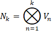
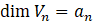
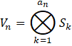
The ⊗ symbol simply indicates a group. So N signifies the neural network as a whole and V means hidden layers. The first equation means the neural network is a group of k hidden layers. The second equation means the dimension of V is a. This corresponds to the number of neurons in the hidden layer. In the third equation, S signifies synapses, or artificial neurons. It means the hidden layer is a group of a neurons.
Our neural network has only one hidden layer with 4 neurons. As such, its mathematical representation would be:
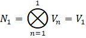
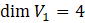
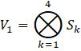
So, how does an ANN actually learn to do something like recognize a tomato? The answer is gradient descent which is an iterative optimization algorithm. In order to learn a pattern, which is essentially what any neural network does, the network must be exposed to previous data in order to accurately evaluate the new situation. It is learning specific cases by studying the general. For example, a network will study 2000 images of a tomato, learn what a tomato is, then be able to recognize a tomato it has never encountered before. This set of images it looks at is known as training data and the new case is known as testing data. Once the network trains, it remembers what it has learned (by storing the weights and biases) and uses this information for future cases.
In order to illustrate gradient descent, we will go through an example. Let us study a one neuron sigmoidal neuron network intended to solve a simple problem:
| Inputs | Output |
| 0, 0, 1 | 0 |
| 1, 1, 1 | 1 |
| 1, 0, 1 | 1 |
| 0, 1, 1 | 0 |
| 1, 0, 0 | ? |
It’s pretty obvious the solution to this problem is to return 1 if the first input in the set is 1 and 0 otherwise. However, the neural network must learn this by studying the first 4 cases as training data (as the answer is provided to it) and evaluating the last case as testing data. The network consists of 3 inputs, one hidden layer consisting of a single neuron, and one output.
To begin, we apply random weights (between -1 and 1) to the connections between the inputs and the neuron. I will only consider training in terms of the first case for ease of calculation. Furthermore, I will represent the inputs (of the first case) and weights as 3×1 arrays:
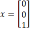
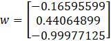
We calculate the weighted sum:
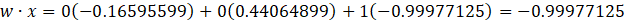
We then pass this weighted sum through the activation function to achieve our sigmoid output:
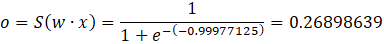
As we are training, we will compare the output we have to the desired output of 0 (provided in the training data). We must find a way to calculate an adjustment to our weights in order to be more accurate. We can calculate an error by subtracting the output from the desired output:
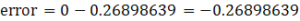
Now that we have an error, we must find a way to link this to an adjustment. If we recall the graph of the sigmoid function, we notice the graph is steep when inputs are close to the origin while it is comparatively flat as values move away from the origin. If we think conceptually, the further the value is from the origin, the closer it is to 0 or 1. This means the network is confident, and the opposite is true when values are close to the origin. This means when the network is confident, we don’t want to change its weight very much because it’s already accurate. However, when the network is not confident, we want to make more drastic adjustments to push it to be more confident. The steepness of the graph demonstrates these small and large adjustments. By now the derivative (hence the name gradient descent) has probably popped into your mind as it is the description of how the curve changes. To analyze the error, we will use the derivative of the sigmoid function:
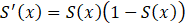
We can use this derivative to calculate an adjustment to the weights by multiplying the error with this derivative, then taking the dot product of the inputs with this value.
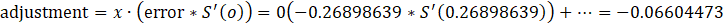
The last step is to add this adjustment to all the weights:
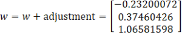
Now that we have our new weights, we repeat the process with our training inputs. This will continue for however long is necessary to achieve sufficient accuracy. It is important to keep in mind that we only looked at the first case when training the network. In reality, the network would have trained by accounting for all four cases (taking the weighted sum of all 12 input-weight pairs), but this was simplified for demonstration. If this process is performed in full 10000 times, the weights will look like this:
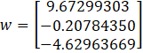
When considering the inputs 1, 0, 0, the network returns 0.99993704 – very close to the correct answer 1. As we have seen, the network studied examples, then when it encountered a similar problem that wasn’t included in its training data, it was able to reference its previous encounters and successfully solve the problem.
For more complicated neural networks (those with multiple hidden layers, also known as deep neural networks), a computational method known as backwards propagation or backpropagation is used to propagate the training outputs back through the network in order to update the weights. All it entails is using the calculated error for a hidden layer to generate a delta (difference between target and actual for the entire layer). This delta is then used to calculate error for the previous layer, which will generate a delta of its own. The adjustments for each layer are then calculated taking the dot product between the output from the previous layer and the corresponding delta. The first layer will take the dot product between the inputs and its delta to calculate the adjustment just like the above example. Similarly, these adjustments are applied and the gradient descent algorithm continues.
Artificial neural networks are mathematical models inspired by biological neural networks. Like neurons, if the sum of inputs crosses a threshold, they “fire.” Each neuron has weights (values which control how much each input matters) and uses an activation function (determines the output of the neuron). The network learns by looking at training data, then calculating the error between its estimate and the actual value (which is provided to it during training). It uses this error to adjust its weights and then continues the training process until desired. After training is complete, the network should be able to approach a similar problem as it has learned how to solve the type of problem it has been trained on.